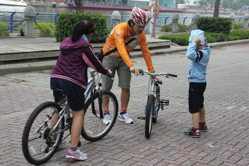

出遊的前一天，高雄竟然下雨！讓獅友們擔心不已，深怕今日行程變卦。所幸，老天爺很眷顧我們，知道我們有多麼期待這次單車出遊，給了我們一個很不高雄但很適合騎車的天氣。在秋意濃的午後，車隊浩浩蕩蕩從愛河出發，前往鼓山渡輪口搭乘渡輪至旗津，上砲台考驗大夥兒的腳力，成功攻克砲台的感覺，真好！接著，騎到風車公園享用義豐外送的冬瓜茶，補充糖分準備沿海岸線競速，挑戰最高時速30公里，因為路況相當好，讓我們不知不覺成為追風少年，時速愈飆愈高，享受風馳電掣的快感，抵達終點高字塔時，還很幸運地看到大船入港。回程時，有二位不知不覺騎過頭的年輕人被大家打趣地說道，可能是因為覺得騎不過癮便自行加碼。哈哈！在海濱海產店用完超級豐盛的晚餐後，一行人便從中洲渡輪口搭乘渡輪至前鎮新生路直抵夢時代，蝦米？夢時代也有渡輪站，太不可思議了，這是今日最大的爆點！超哥說，這是河東獅自行車社才有的私房景點，有來的人賺到了！:)
既然是河東獅，當然要與河東路之地標「黃金愛河」合影，秀出我們的坐騎！

出發前一定要做的事──檢查車況！
旗津，我們來囉！:)
請可愛的幼獅向大家報告我們現在在哪兒？
在社長帥氣地領軍之下，各位都順利攻克砲台！
攻克砲台，YA!
勳煜的新車處女航，YA!
害羞的新車&新人沅孝，請多指教！
CODY...帥氣小超哥！

寓仁帥哥，怎麼不看鏡頭？

慧琳、薰薰大小美女同心齊步走！
雯琪戴上河東獅專屬頭巾，看來很好用！
對著鏡頭 say YA!! 亮文也來囉～
峻哥，地上有什麼東西讓您笑的如此開心？@@...
柏宏學長似乎有話要跟大家說。
小燕姊姊說：各位，我們追風去！
天空陰陰的，但，我們的心卻是晴朗的！～～瞭望台
單車一字排開，多麼壯觀！
在小燕姊姊號召下~入社！

風車公園-----攝影師超哥終於有機會亮相了....中間那對父子檔好搶戲唷！>///<
峻哥說，刻不容緩，大家跟著我去攻高字塔吧！
運動後享用豐盛的海濱佳餚，是一大樂事！
寓仁弟弟，對不起！讓你跟著二位姊姊騎了許多冤枉路XDDDDDD
社長說，兒子呀~騎車後吃大餐是不是很美味？
小燕姊姊說，沅孝這次就由你執筆吧！
峻哥說，兒子呀~好好考試，下次帶你去環湖。
柏宏學長只需背影...就能號召大家一起加入河東獅社樂活騎！:)
～～～感謝超哥用相機為大家留下這麼多美麗的回憶～～～
河東獅 於 2012-11-29 21:17:53 回應
精典路線，山海河港，一次暢遊！